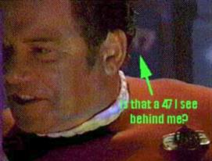
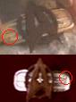

|
 |
Star Trek: Generations
Generazioni
|
 |
Cast
Data Stellare 48650.1: Quando meno se l'aspetta, l'Enterprise-D
viene chiamata a fronteggiare il misterioso fenomeno del
Nexus e il folle Soran che
vuole usarlo per ritrovare un passato ormai perduto a prezzo della vita di
milioni di persone. Lo stesso Nexus
racchiude la chiave per la sua sconfitta e il segreto della sorte di Kirk.
- Il titolo provvisorio del film era Star Trek: The Next Generation: The
Movie.
- Durante le riprese, la poltrona del capitano Picard (la stessa usata per
le sette serie di The Next
Generation) è stata rubata ed è stato necessario ricostruirne una
nuova.
- Nell'estate del 1994, l'intero script del film è apparso su Internet. La
produzione ha dovuto girare di nuovo alcune scene, senza però modificare la
trama.
- Rick Berman ha ammesso in un'intervista
ad Entertainment Weekly che tra le 207 sequenze di effetti speciali,
una è stata presa pari pari da uno dei film precedenti.
- La battuta di Soran «time is the fire in wich we burn» (riportata
interamente sotto) è una citazione da For Rhoda di Delmore Schwartz.
- In origine l'apertura del film doveva essere una scena, poi tagliata, in
cui Kirk usa un paracadute orbitale per atterrare in un campo di grano dove lo
attendono Scotty e Chekov; questa scena compare nella novelization del film. Il paracadutismo orbitale verrà ripreso in
Extreme Risk.
- A proposito di Shatner e della morte di Kirk, McDowell ha dichiarato: «He'll
probably come back if they wave a big check in front of him.»
- Malcolm McDowell è il fratello della madre di
Alexander Siddig.
- A proposito della distruzione dell'Enterprise-D
Jonathan Frakes ha dichiarato «Non avremmo mai dovuto dare le chiavi
dell'astronave a Deanna!»
- I nomi dei bambini della progenie di Picard sono desunti dai
call sheet.
- L'album dei ricordi di Picard contiene una foto del Maresciallo d'Italia
Rodolfo Graziani, già Vicerè dell'Africa Orientale Italiana degli Anni '30. La
foto è stata scattata durante una riunione tenuta nel 1936 nel corso della
campagna per la pacificazione della Somalia (alla stessa riunione ha
partecipato anche il Generale di Brigata Area Ranza, comandante della Regia
Aeronautica in Africa Orientale Italiana).
- Dati tecnici delle riprese:
- Formato dei negativi: 35 mm
- Formato della pellicola: 35 mm (anamorfica)
- Aspect Ratio: 2.35:1
- Titoli nelle altre lingue:
- Generasies (Afrikaans)
- Treffen Der Generationen (Tedesco)
- O Encontro De Gerações (Portoghese)
- Isezukulwane (Zulu)
- Generations (Giapponese, il titolo non è stato tradotto)
- Générations (Francese)
- La próxima generación (Spagnolo)
- Le esterne di Veridiano III sono state
girate nella Valle del Fuoco vicino a Las Vegas, Nevada.
- All'inizio del film si vede una bottiglia di champagne e l'etichetta
riporta la scritta Moét & Chandon - Epernay - Foundee en 1745 (ok, è casuale,
ma merita la citazione).
-
Kirk
scende la scala 47 per andare a riconfigurare il deflettore dell'Enterprise-B.
- Dalla La'kul sono state trasportate 47 persone su 150.
- Quando l'Enterprise-B
riceve il messaggio dei cargo el-auriano,
dietro a Kirk, sulla sinistra, si legge su un pannello il numero 0587.4 e
sulla consolle delle comunicazioni si legge 0407.7.
- Quando scatta l'allarme rosso, sul pannello sotto la scritta «Red Alert»
compare il numero 0407.7.
- Quando Picard riceve la comunicazione sul ponte ologrammi, sul pannello in
basso a destra si vede un 47.
- Quando Soran sulla base di
Amargosa trasmette le coordinate al Bird of
Prey fra le lettere klingon appaiono dei numeri arabi tra cui c'è la sequenza
9736275472.
- Dopo l'esplosione della stella di Amargosa, Picard ordina di partire a
tutta velocità. Vengono inquadrate le mani del timoniere e sul pannello c'è un
147.
- Guardando il filmato, Lursa chiede di ripetere da 924 (9 - 2 = 7).
- Lo schermo che mostra il campo di gravitoni riporta 625 (6 - 2 = 4 e
2 + 5 = 7).
- La frequenza della modulazione degli scudi dell'Enterprise è 257.4.
- Quando l'Enterprise-D
arriva in orbita attorno a Veridiano III,
Picard chiede a Data quanto manca all'arrivo della
stringa di energia e Data
risponde che mancano 47 minuti.
- Quando Data trova Spot fra le macerie, accanto a Deanna c'è un bidone
giallo che riporta la scritta «Hazardous Material 23783-824 35475332...».
- Data dice di aver provato 261 emozioni differenti (6 - 2 = 4 e 6 + 1 = 7).
- L'album di Picard contiene vari ricordi del capitano che non sono
visibili sullo schermo, tra cui: un certificato per la vittoria della maratona
dell'Accademia della Flotta del
2323, l'annuncio della cerimonia di conferimento dei gradi della flotta per
Jean-Luc Picard che si sarebbe tenuta il 20 luglio
2327 nella Sala Gagarin a
San Francisco, l'ordine della
Flotta che gli assegna il comando della
Stargazer, un premio conferito a Maurice Picard per l'ottima coltivazione
delle viti, l'ordine Grankite per la Tattica, un'etichetta di una bottiglia di
Chateau Picard, corrispondenza personale, un invito al matrimonio di Jack e
Beverly Crusher. Tutti questi elementi sono stati disegnati e realizzati da
Geoff Mandel, Alan Kobayashi e Penny Juday.
-
La mostrina della
Flotta Stellare dei film della
Serie Classica ha il
puntino in alto a sinistra, come riportato nella parte inferiore dell'immagine a
fianco che riporta la mostrina di Saavik
in Star Trek II.
In questo film la mostrina di Kirk ha il puntino in basso a sinistra, come
riportato nella parte superiore dell'immagine a fianco che ritrale la mostrina
di Kirk depositata da Picard su
Veridiano III.
- Subito dopo l'incontro con il
Nexus, la guardiamarina Sulu riferisce che la struttura dell'astronave a
tribordo (destra) sta cedendo. Sullo schermo dell'Enterprise-B
esplode la nave a babordo (sinistra).
- Le escoriazioni sulla faccia di Soran cambiano leggermente di posizione
durante la durata del film.
- Quando Picard entra nel Nexus gli riappare il commbadge sparito quando è
stato teletrasportato sul pianeta.
- Quando l'Enterprise è sotto l'attacco dei
Klingon Riker dice di prepararsi a
lanciare una raffica di siluri, ma quando impartisce l'ordine di fare fuoco si
vede un solo siluro partire dalla nave.
- Quando l'Enterprise-B
parte per il viaggio inaugurale, il capitano dice espressamente che il viaggio
sarebbe stato breve. Quando incontrano il
Nexus sembra che l'Enterprise-B
sia
l'unica a disposizione nei pressi della Terra
per soccorrere i superstiti.
- Quando Picard chiede l'arco al computer dell'holodeck, si vedono
chiaramente delle persone vere dietro l'arco stesso, il quale dovrebbe essere
nella parete dell'holodeck attorno alla porta d'ingresso.
- Kirk usa una sella di tipo australiano per montare a cavallo. A causa del
disegno della stessa, una sella simile è molto scomoda se usata facendo fare
dei salti al cavallo.
- Il Nexus passa attraverso la nostra galassia ogni 39
anni circa. Per lento che sia, deve comunque viaggiare ad una velocità
maggiore di quella della luce. Però quando transita nei pressi di
Veridiano III sembra che stia andando a velocità subluce.
- Quando Soran lancia la sonda contro
Veridiano, si vede il sole diventare
scuro dopo appena 30 secondi. Assumendo che
Veridiano III sia di classe M e Veridiano una stella di classe G, il pianeta
si dovrebbe trovare almeno a quattro minuti-luce dalla stella.
- Quando le due sorelle klingon
scoprono la frequenza degli scudi e sparano sull'Enterprise, sembra che
l'equipaggio sia del tutto sorpreso da questa tattica e infatti la nave viene
distrutta in poco tempo; questo è assurdo, per tre motivi. Innanzi tutto, Worf
capisce subito che i
Klingon hanno trovato la frequenza
degli scudi; sarebbe, quindi, bastato attivare la rotazione casuale, come si
fa contro i Borg. Inoltre, la nave
Klingon era chiaramente inferiore all'Enterprise:
invece di ordinare un colpo solo, Riker avrebbe potuto iniziare un fuoco
intenso contro i nemici che avrebbero dovuto soccombere in breve tempo oppure
rassegnarsi a fuggire. Da ultimo, come estrema risorsa l'Enterprise
avrebbe potuto fuggire e l'equipaggio riorganizzarsi una volta in salvo, in
quanto la velocità massima della nave klingon
era inferiore a quella dell'Enterprise.
- Dopo che la sezione a disco si separa, l'esplosione della sezione motori
dell'Enterprise la spinge verso l'atmosfera del pianeta, fino allo
schianto. Perché quando la sezione a disco si è separata si è allontanata
nella direzione del pianeta e non in quella opposta rispetto alla posizione
del resto della nave? Abbiamo visto che il disco era perfettamente in grado di
manovrare, tanto valeva manovrare nella direzione più sicura.
- L'esplosione spinge la sezione a disco come una foglia al vento, ma questo
non è molto sensato. Secondo i dati riportati dal
Technical Manual, possiamo
stimare che la sezione a disco abbia una massa di meno di 2 Mt, mentre il
resto della nave ne abbia una di circa 3,1 Mt: durante l'esplosione la
quantità di materia della sezione motori che investe il disco è probabilmente
qualcosa intorno al 10% del totale, quindi circa 310.000 tonnellate.
Ammettendo anche una velocità dei detriti di circa 27‰
di c (si può ottenere a spanne conoscendo la scorta di antimateria), la
velocità finale del disco sarebbe poco più circa il 0,01c, un valore
molto al di sotto delle capacità dei propulsori a impulso.
- Nella versione italiana su DVD, le navi
el-auriane sono in posizione «310 mark 214». Nei sottotitoli italiani
e inglesi viene riportata la frase «310 mark 205», ma nel parlato
originale la battuta parla di «310 mark 215».
- Nel dialogo finale tra Deanna Troi e Data la betazoide chiede «come mai
hai deciso di non rinnovare il tuo chip emozionale?» in originale però Deanna
dice «remove», non «renew».
Kirk: You left port without a tractor beam?
Harriman: It won't be installed until Tuesday.
Harriman: The medical staff... doesn't arrive until Tuesday.
Picard: If there's one thing I've learned over the years, it's never
to underestimate a Klingon.
Data: I hate this! It is revolting!
Guinan: More?
Data: Please!
Soran: They say, time is the fire in which we burn. right now,
Captain, my time is running out. We leave so many things unfinished in our lives. I know you
understand.
B'Etor: I hope for your sake you are initiating a mating ritual.
Soran: Now, if you'll have to excuse me, Captain. I've an appointment with eternity, and I don't want to be late.
Data: Oh, shit!
Kirk: You say history considers me dead. Who am I to argue with history?
Picard: You're a Starfleet officer. You have a duty!
Kirk: I don't need to be lectured by you. I was out saving the galaxy
when your grandfather was in diapers. Besides which, I think the galaxy owes me
one.
Kirk: I take it the odds are against us and the situation is grim?
Picard: You could say that.
Kirk: You know, if Spock were here, he'd say I was an irrational,
illogical human being for taking on a mission like that. Sounds like fun!
Kirk: Who am
I to argue with the captain of the Enterprise?
Kirk: It was... fun.